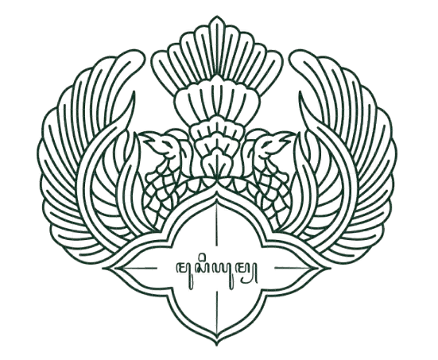

Selamat datang di
Museum Pariwisata Kagungan Dalem Keraton Yogyakarta
Temukan Keagungan Tradisi, Keindahan, dan Pengetahuan di Keraton Yogyakarta
Rencanakan Kunjungan Anda Temukan Keagungan Tradisi, Keindahan, dan Pengetahuan di Keraton Yogyakarta
Rencanakan Kunjungan AndaKeraton Yogyakarta, sebuah tempat di mana sejarah, budaya, dan keindahan berpadu harmonis. Kami dengan hangat menyambut Anda untuk menjelajahi istana megah ini, pusat dari kebudayaan Jawa yang kaya dan penuh warna. Di sini, Anda akan dibawa kembali ke masa lampau, merasakan aura kebesaran Kesultanan Yogyakarta, dan menyaksikan koleksi artefak serta seni yang mempesona. Nikmati setiap sudut Kraton dengan tur edukatif dan pengalaman tak terlupakan yang telah kami siapkan khusus untuk Anda. Selamat menikmati perjalanan yang sarat akan pengetahuan dan keindahan di Keraton Yogyakarta!

Museum Keraton Yogyakarta adalah istana di Yogyakarta, Indonesia, yang menjadi kediaman Sultan dan keluarganya juga sebagai pusat budaya Jawa yang menampilkan artefak kerajaan.
Informasi detail
Taman Sari Yogyakarta, atau Taman Sari Keraton, adalah bekas taman istana Keraton Yogyakarta yang dibangun oleh Sultan Hamengku Buwono I pada 1758-1765.
Informasi detail
Museum Wahanarata, atau Museum Kereta Keraton, terletak di barat Keraton Yogyakarta, tepatnya di Jalan Rotowijayan, dekat kantor Kemantren Kraton.
Informasi detail
Nikmati acara eksklusif, akses tak terbatas ke pameran dan Ruang Anggota,
ditambah diskon di toko-toko Museum, kafe, dan restoran.



Teras Foto
Kereta Kencana Kagungan Dalem Museum Waharanatha

Koleksi kuda di Kagungan Dalem Museum Waharanatha

Kagungan Dalem Museum Kedhaton

Salah satu sudut Kagungan Dalem Taman Sari

Pendapat masyarakat setelah mengunjungi Museum Keraton Yogyakarta.
This product has simplified my life and enhanced my productivity. It's incredibly user-friendly, and the support team has been responsive and helpful. I'm truly impressed!
This product has simplified my life and enhanced my productivity. It's incredibly user-friendly, and the support team has been responsive and helpful. I'm truly impressed!
This product has simplified my life and enhanced my productivity. It's incredibly user-friendly, and the support team has been responsive and helpful. I'm truly impressed!
Untuk pertanyaan apa pun yang belum terjawab, hubungi tim dukungan kami melalui email. Kami akan merespons sesegera mungkin untuk membantu Anda.
Keraton Yogyakarta adalah istana resmi Kesultanan Yogyakarta yang berfungsi sebagai pusat kebudayaan Jawa dan kediaman Sultan. Keraton ini memiliki nilai sejarah dan budaya yang tinggi dan merupakan salah satu destinasi wisata utama di Yogyakarta.
Jam operasional museum adalah pukul 08.00 hingga 16.00 setiap hari kecuali hari libur tertentu.
Tiket dapat dibeli langsung di loket museum atau melalui situs resmi Keraton Yogyakarta.
Tiket dapat dibeli langsung di loket museum atau melalui situs resmi Keraton Yogyakarta.
Tiket dapat dibeli langsung di loket museum atau melalui situs resmi Keraton Yogyakarta.
Tiket dapat dibeli langsung di loket museum atau melalui situs resmi Keraton Yogyakarta.
Tiket dapat dibeli langsung di loket museum atau melalui situs resmi Keraton Yogyakarta.
Tiket dapat dibeli langsung di loket museum atau melalui situs resmi Keraton Yogyakarta.
Tiket dapat dibeli langsung di loket museum atau melalui situs resmi Keraton Yogyakarta.
Kami dengan senang hati akan menjawab pertanyaan Anda dan membantu Anda menentukan layanan mana yang paling sesuai dengan kebutuhan Anda.
Jl. Rotowijayan Blok No. 1, Panembahan, Kecamatan Kraton, Kota Yogyakarta, Daerah Istimewa Yogyakarta
Kratonjogja.id
Tuesday - Saturday, 8.30 a.m-2.30 p.m